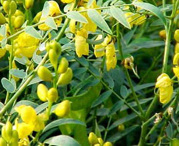
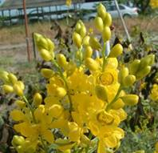
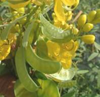
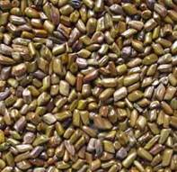
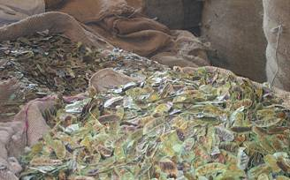
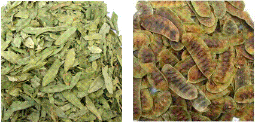

HORT 282 :: Lecture 32 :: SENNA

SENNA
Senna (Cassia angustifolia Vahl.)

Senna is a small perennial under shrub, a native of Yemen, South Arabia. The leaves and pods contain Sennosides used for their laxative properties. It was introduced into Tamil Nadu in the eighteenth century where it is grown as an annual crop of 5 to 7 months duration in 8 000 to 10 000 ha both under rainfed and irrigated conditions. Successful cultivations have also been demonstrated in Karnataka (Bangalore) Gujarat (Anand), Rajasthan (Jodhpur) and Delhi with comparable yield and quality of the produce, but it is yet to establish itself as a cash crop there due to the lack of organized marketing. A major part of the produce is exported in the form of leaves, pods and sennoside concentrates, though several pharamaceutical houses utilize it for the manufacture of calcium sennoside granules, tablets and syrups for marketing within the country as well. Germany, Hungary, Japan, Netherlands and the USA are the main markets. The export of leaves and pods from India is of the value of Rs. 20 million annually. In addition, the erstwhile USSR countries buy sennosides (concentrates) and the current o'1nual export of the sennoside concentrate is around Rs. 20 million.
Senna is used in medicine as a cathartic. It is especially useful in habitual constipation. It increases the peristaltic movement of the colon. The pods have the tendency to gripe caused by senna may be obtained by combining it with an aromatic or a saline laxative. The laxative principles of senna are two glycosides, viz., sennoside A and sennoside B. The plant also contains sennosides C & D. A number of other gIycocides have also been reported. It also contains beta-sterol (0.33%) and flavanols-kaemferol, kaempferin and isorhamnetin. They are used in the form of decoctions, powders; confections and many other household preparations. Senna extracts, on storage, lose biological activity more rapidly than is revealed by chemical estimation. The leaves/pods as such or in powder form do not lose potency easily. The quantity administered in the form of infusion ranges from 0.6 to 2 g of leaves or pods soaked in 125 ml of warm water for about 12 hours, whereas, it is usually 30 mg of sennosides per tablet.
Origin and Distribution
Cassia is a pantropic genus comprising of 500 species, of which 20 are found in the native flora of India. There are two sources of the Senna drug, namely, Cassia augustifolia Vahl, and C. acutifolia. Del. C. angustifolia, commonly called Tirunelvely senna, is indigenous to Somalia, Southern Arabia, part of Sindh (Pakistan) and the Kutch area of Gujarat. In India, it is cultivated in Gujarat, Rajasthan and Tamil Nadu. In Tamil Nadu it is cultivated in the districts of Thirunelveli, Ramanathapuram, Madurai, Salem and Tiruchirapalli in an area of about 10000 hectares. C. acutifolia known as Alexandrian senna is indigenous to Sudan and Sinai. It is cultivated on a small scale in Sudan and Egypt, and is mainly collected from wild plants of C. acutifolia, whereas the Indian produce comes entirely from the cultivated crop of C. angustifolia and their pods contain about 2.4-4.5 and 1.25 to 2.5% sennosides, respectively.
Description of the Plant
Cassia angustifolia (2n=28), belonging to the family Leguminaesae, is a small perennial under shrub, below 1 m in height with ascending branches. The leaves are large, compound and pinnate. The full grown leaflets are bluish-green to pale-green in colour and emit a characteristic fetid smell when crushed. The flowers are bright yellow in colour, arranged in axillary, (on subterminal) erect, many-flowered racemes. The flowers are not season bound and are borne between, 35 to 70 days of age, depending upon the time of sowing, and its season of cultivation. The pods appear immediately after flowering, are slightly curved, 3.5 to 6.5 cm long and up to 1.5 cm broad, green in the beginning changing to greenish-brown to dark brown on maturity and drying. Each pod has 5 to 7 ovate, compressed, smooth, dark-brown seeds.
 |
 |
 |
The other species is very similar to C. angustifolia in morphology and growth, except in the dimension of its leaflets and pods. The leaflets are shorter and narrow. The pods are distinctly short, flat and broad, oblong but slightly curved upwards and are broadly rounded at the two ends. -Further, surface making on the testa (seed) and stomatal index (leaves) are, remarkably, considered to distinguish between the two species. It has been found that Cassia obouata and C. italica also possess a fair to good percentage of anthraquinone compounds; C. obouata is common all over India. C. italica grows on sandy, saline soils in west Rajasthan and Saurashtra (Gujarat) and is a potential new source of the senna drug.
Varieties
KKM-1: It is a selection from Thenkalam local type. 135-140 days. It contains 2.34 % sennoside. It is suitable for Thirunelveli and Tuticorin districts.
The Gujarat Agriculture University, under the All India Co-ordinated Project on Medicinal and Aromatic Plants at Anand, has released a late flowering type as 'ALFf -2' through selection, which remains in a vegetative stage till 100 days and is suitable for growing exclusively as a leaf-crop. The CIMAP, Lucknow, has also released a high-yielding variety named 'Sona'.
Soil
The crop can thrive on a variety of soils, but is largely grown on red loam, alluvial loam and the rich clayey rice-fields. The texture of the soils which account for the major hectrage under senna crop varies from sandy loam to loam, while the black cotton soils are heavier and more fertile. In general, these soils are more friable but less moisture retentive and of low fertility, usually, nitrogen and phosphoric acid are deficient throughout these soils. The average pH ranges from 7-8.5. It is very sensitive to water-logging and, hence, it is grown only on well drained soils.
Climate
Senna is a sun-loving crop and requires bright sunshine for its successful growth. The trials at Bangalore have shown that it can be grown as an early summer (Feb-March) or a winter (Oct-Nov) crop. However, sowing in the rainy season is not good, as the crop on harvest cannot be dried easily. Whereas, under North Indian conditions like Delhi and Gujarat, where the rainy season is short, it is reported to be the ideal time as the plants put on luxuriant growth. Heavy rains and cloudy weather during growth are harmful to the crop. An average rainfall of 25-40 cm, distributed from June to October is sufficient to yield good harvests.
Land Preparation
The land is prepared deep and exposed to the sun for 110-115 days to dry out the roots of perennial weeds, followed by two cross ploughings, harrowing and leveling. FYM is incorporated into the soil at the time of the final cross-ploughing. Then the land is laid out into plots of convenient sizes with irrigation channels.
Cultivation
Propagation
The crop is raised from seeds. Since the seeds have a hard and tough seed-coat, a certain amount of abrading of its surface is necessary to induce quick germination. This is achieved by pounding the seeds lightly with coarse sand in a mortar.
Soaking the seeds for 10-12 hours before sowing is reported not only to give 100% germination, but also the stand of the plants grown is even. About 20 kg of seeds are required to cover a hectare of land.
Sowing
The seeds are broadcast or, more preferably, drilled at a distance of 30 cm in lines made at 30 cm apart at 1.5 to 2.5 cm depth on well prepared land. The germination commences on the third day and is completed within a fortnight. Before sowing, the field should be perfectly levelled, lest it hamper uniform seed germination. It is found that treating the seeds with Thiram, Captan or Agroson G.N. at 2.5 g/kg protects the seedlings from damping-off and seedling blight diseases which are common occurrences. The seeds can also be dibbled on the inner sides of the ridges opened at 45 cm distance, maintaining a plant-to-plant spacing of 30 cm. Only about 5 kg of seeds are required for this method of sowing.
Manures and Fertilizers
Farmers in Tamil Nadu use 4-5 cartloads (5-10 t/ha) of well-rotted FYM at the time of sowing. In most cases, it fully utilizes any leftover nutrient from the previous crop and, therefore, the nutrient requirement of senna is variable. However, trials in India have shown that the crop in all, takes 50-100 kg of N, 20-50 kg of P and about 30 kg of K /ha in a growing period of 130-150 days, depending upon the growth and number of pickings. In general, where specific soil nutrient status of the field is not readily found, 80 kg of N and 40 kg each of P and K/ha may be applied for the optimum production of leaf, pod and total alkaloids. Of these, the entire dose of P and K and 50% of N should be applied at the time of sowing, and the remaining 50% of N is to be applied 90 days after sowing.
Crop Rotation and Inter cropping
In Tamil Nadu, senna is grown after the paddy and intercrop cultivation in between rows of cotton, sesamum, chillies, brinjal, okra and tomatoes is popular. Studies conducted at Delhi showed that senna-mustard and senna-coriander rotations gave higher profits and these rotations have proved superior.
Irrigation
Senna can be economically grown under rainfed conditions. In most years, the crop needs no irrigations except during prolonged drought. However, when it is grown as a semi irrigated crop the yield, increases considerably. About, 5-8 light irrigations are enough to raise a good crop of senna as heavy irrigations are injurious to the crop.
Weeding and Interculture
When the plants begin to grow, once or twice inter culturing is given after which the rows close up. The first weeding-cum-hoeing is done at 25-30 days, a second at 75-80 days and a third at 110 days, to keep the soil free from weeds. The use of Teeflan herbicide as a pre-emergent sprays at the rate of 4 kg/ha has been reported not only to increase the yield, but also the anthraquinone content.
Pests and Diseases
Pests
The larvae of several leaf-eating caterpillars feed on the green senna leaves. Usually, the spraying of Carbaryl (4 g/I) periodically in the growing season controls the infestation. The white butterfly (Catopsilia pyranthae) attack on this crop can be minimized by sowing the crop in March-April, instead of June-July in North India.
Another pest, a pod borer is also reported to attack the pods and can be controlled by spraying Endosulphan (0.05%) or Carbaryl (0.25%) at an interval of 10-15 days.
Diseases
The leaf-spot disease is the most serious disease and causes severe damage to the crop. The infested leaves drop off, resulting in poor yield. The disease is caused by Alternaria alternata (Fr.) Keisel. Phyllosticta spp. and Cercospora spp. The sennoside content in the leaves is inversely proportional to the intensity of the disease. The spraying of 0.15% Dithane M-45 at fortnight intervals, 3 times in a period of 5-6 weeks, has been found to control the disease effectively.
Damping-off of seedlings is the most devastating disease, which is caused by Rhizoctonia bataticola. The disease spreads rapidly if the fields are affected by stagnating moisture at this stage. Treatment with Thiram or Captan at 2.5 g/kg of seeds protects the growing seedlings. At a later stage its other physiological form, called Macrophomina phaseoli develops; it causes dry rot in the crop and kills the plant. The fields can be drenched with 0.2% Brassicol or 0.5 to 01. %. Rhizoctol, but this only gives partial control.
The leaf-blight disease is caused by Phyllosticta spp. usually occurring at the later stages of growth, in September-October. Cloudy days and humid weather conditions favour the spread of the disease.
 The leaf-spot disease initially appears as small, brown, irregularly scattered lesions on leaves which grow bigger in size and turn black in colour at a later stage. The praying of 0.15% Diahane M-45 at fortnightly intervals can control the diseases.
Harvesting, Processing and Storage
It has been found that young senna leaves and pods contain a high sennoside content but since the produce is sold on the basis of weight, a balance between weight and content has to be made, to choose the right stage for harvest. It is also found that senna plants produce foliage containing higher sennosides between 50-90 days of sowing. The first picking of the foliage crop should be done at 50-70 days' age, depending upon the total plant growth. The picking of leaves is done by hand so that most of the growing tops are removed at harvest; this also induces more branching which, otherwise, reduces the foliage growth considerably. A second picking is taken at 90-100 days and the third picking between 130-150 days, when the entire plants are removed, so that the harvested material includes both leaves and pods together.
The harvested crop should be spread in a thin layer in an open field to reduce its moisture. Further drying of the produce is done in well-ventilated drying sheds. It takes 10-12 days to dry completely. The dry leaves and pods should have a light-green to greenish-yellow colour. Improper and delayed drying changes the colour to black or brown which lowers the sennoside content and it fetches a lower price. A rapid mechanical drying at 40°C could also be attempted. The seeds contain no sennosides and only add weight to the produce. The pods are threshed during drying to remove the seeds. The produce is baled under hydraulic pressure and wrapped in gunny bags for export.
Yield
A good crop of senna can give 15 q/ha of dry leaves and 7 q/ha of pods, under irrigated and good management conditions. The yield, under rainfed conditions is about 10 q/ha of leaves and 4 q/ha of pods.

Estimation of Sennosides
To 0.5 g (40 mesh) of accurately weighed powder in a 100 ml flask add 50 ml of water, swirl to mix, attach a reflux condenser and, immerse the flask in a boiling water-bath with the water-level in the bath just above that of the liquid in the flask, for 15 minutes. Allow the mixture to cool. Decant and filter the extract into a volumetric flask (100 ml). Add 50 ml water to the residue and extract again in the boiling water-bath as above. The final volume in the flask is made up to 100 ml.
Transfer 20 ml of the clear, supernatant liquid from the volumetric flask to a separating funnel, add 0.05 ml of hydrochloric acid and extract with two successive 15 ml portions of chloroform. Discard the chloroform extracts.
Transfer 20 ml of aqueous extract from the separating funnel to a 100 ml flask. Adjust the pH to 7-8 (with pH paper) with 5% w/v solution of sodium carbonate in water. Add 20 ml of 6.3% w/v freshly-prepared solution of ferric chloride (FeCI3) in a water-mix, attach a reflux condenser to the flask and heat on a boiling water bath for 20 minutes and without cooling the liquid, add 2 ml of HCI. Continue the heating for a further 20 minutes, swirling the liquid in the flask frequently, to dissolve the precipitate and allow it to cool.
Transfer the liquid into a separating funnel, extract with three 25 ml portions of solvent ether, having used each portion to rinse the flask first. Wash the combined etherel extracts with two 15 ml portions of water and dilute to 100 ml with solvent ether. Evaporate 10 ml (extract) of the etherel solution to just-dryness on a water-bath and dissolve the residue in 10 ml of IN KOH. Then, immediately measure the extinction of 1 cm layer to 500 mm using water as a blank.
*****************
- Scientific name of Senna is ______
- Active ingredient of Senna is _______
- Medicinal properties of Senna is _________
- Economic part of Senna ______
- Senna belongs to the family ____________
| Download this lecture as PDF here |